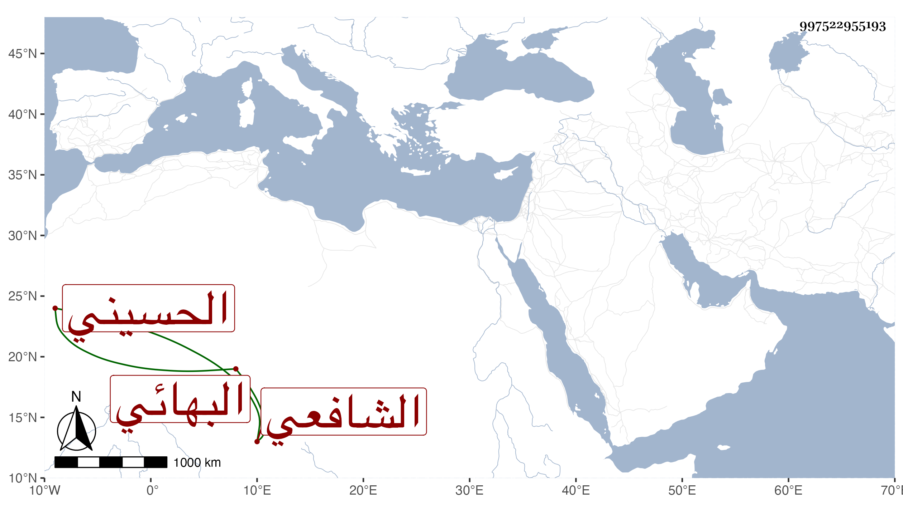

0902Sakhawi.DawLamic.ITO20230111-ara1.EIS1600.997522955193
Biography ID: 997522955193
730
خليل بن أحمد بن جمعة الغرس الحسيني سكنا ثم البهائي الشافعي والد محمد الآتي ويعرف بالفقيه خليل . ولد بعد سنة سبع وسبعين وسبعمائة تقريبا ونشأ بها فحفظ القرآن وجوده وحضر دروس الشمس البوصيري والجلال البلقيني وآخرين بل لا أستبعد أن يكون قرأ على الشهاب الحسيني الماضي لرضاع كان بينهما وأتقن الخط عند الوسيمي أو غيره وسمع من كتاب المغازي إلى آخر الصحيح على ابن أبي المجد والختم فقط منه على التنوخي والعراقي والهيثمي وبعض سنن ابن ماجه على الجوهري والشمس المنصفي وجزء الجمعة للنسائي على السراج البلقيني واختص به وبولديه الجلال ثم العلم وأدب بعض بني هذا البيت وأم بمدرستهم ، وتكسب بالشهادة وبالنسخ بحيث كتب بخطه الكثير وربما علم الكتابة ، وتنزل في صوفية البيبرسية وحدث بجزء الجمعة أخذه عنه غير واحد من أصحابنا ، وكان خيرا مديما للتلاوة والتهجد والجماعة قانعا باليسير متقللا من الدنيا متوددا ظريفا فكها حسن الخط بارعا في الشروط راغبا في سماع الحديث بحيث أكثر السماع مساء على شيخنا رأيته غير مرة وسمعت كلامه وكان يكثر من أخذ مصحفي وتأمله لكونه من قديم خطه ، وهو ممن كثر اختصاصه بالوالد ، حج غير مرة وجاور في آخر أمره أشهرا ورجع فمات في خامس عشري ذي الحجة سنة ثلاث وأربعين بعد زيارته النبي صلى الله عليه وسلم ودفن بالروحاء المعروفة الآن ببيرطاز رحمه الله وإيانا .
